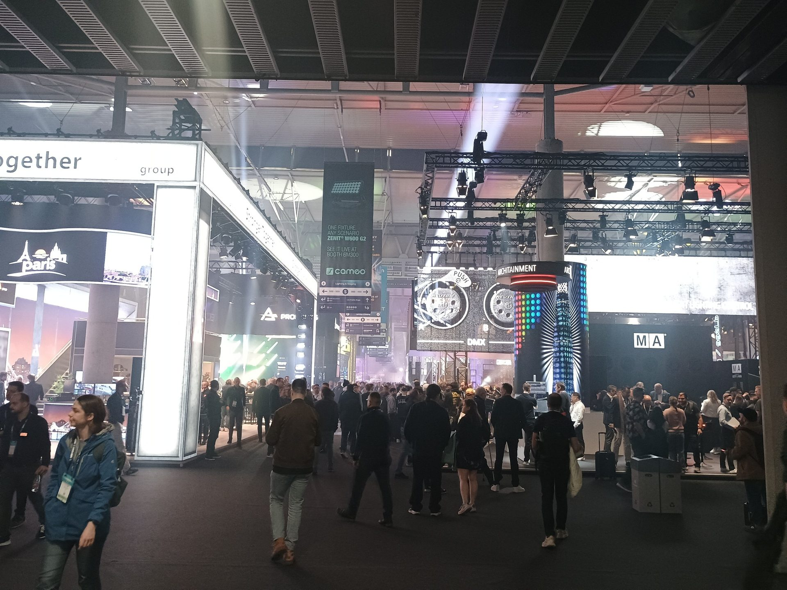
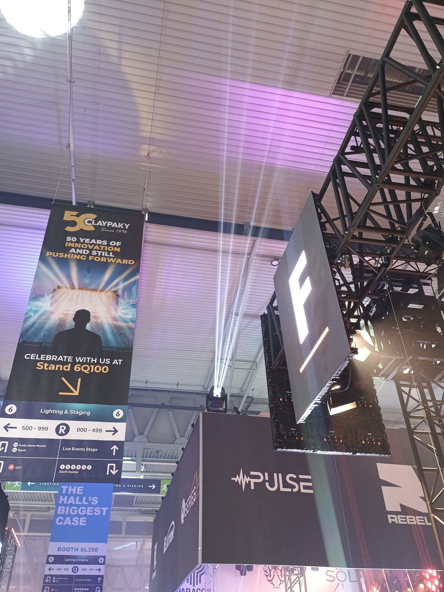
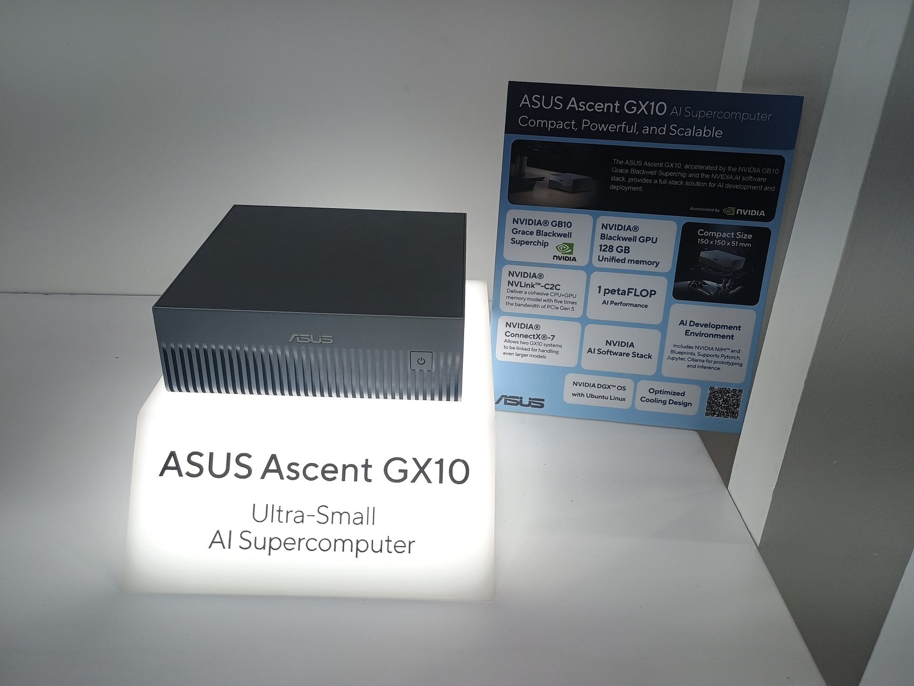
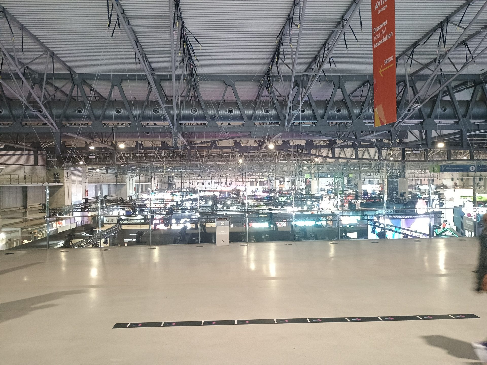
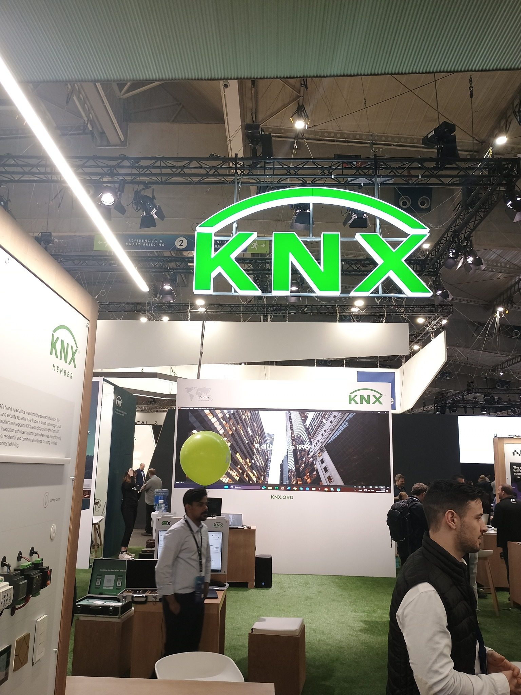

ISE 2026, Барселона: нотатки з поїздки
07.02.2026 • Барселона
Виставки
ISE
AV
Світло
Звук
Robotics
Логістика
Барселона

Коротко
ISE 2026 (Integrated Systems Europe) — велика AV-виставка в Барселоні (3–6 лютого 2026). Це не «технічна конференція», а шоу-рівень експо: звук, світло, екрани, сценічні рішення, керування медіа, інсталяції та сильний акцент на емоційне сприйняття.
Маршрут і реальність дороги
- Київ → Краків (авто), Краків → Барселона (літак), і так само назад.
- Виліт був лише з ручною поклажею — «міський» рюкзак вирішив задачу. Для поїздок до тижня це мій новий базовий сценарій.
- Повернення вийшло важким: на трасі біля Житомира авто занесло, сталася аварійна ситуація. Машина зараз у ремонті, я — ок.
Практичні нюанси
Клімат і одяг
- Брав два рюкзаки: «зимовий» комплект (як для зимових гір) + компактний набір (пара штанів/сорочок/легка куртка + ноутбук).
- Під хворобу це працює, але є слабке місце: коли вже переодягнувся в «літнє», а зовні ще зима (дорога до аеропорту в Кракові).
Здоров’я
- За пару днів до поїздки підхопив застуду. Дорога + пересадка = мінус продуктивність.
- Головний висновок: планувати запас енергії і не очікувати «ідеального нетворкінгу», якщо організм не в формі.
Ночівля перед кордоном
- Ночував у Жовкві перед перетином кордону (в обидва боки).
- Проблема — слабкі сніданки в локальних готелях. Рішення — стандартний «туристичний» набір: консерви/чай/кава/сосиски + газовий пальник.
Транспорт у Барселоні
- Таксі — відносно доступне.
- Метро — дуже дешеве і зручне, але є нюанс: кілька провайдерів/тарифних систем; не кожен квиток «працює всюди».
Харчування
- Ресторани — дорого. Доставка (Glovo) — дуже дорого.
- Найкраща альтернатива — продуктові магазини: фрукти/овочі/м’ясо по ціні адекватні.
- Локальна особливість: пізні вечері. Реальний «останній надійний» прийом їжі — обід до ~16:00. Потім або магазини, або довгий пошук.
Про ISE як подію
- Фокус: акустика, колонки, керування музикою, світло, троси/крани, студійне обладнання, живлення.
- Структура: 6+ залів, розбитих по темах (легко загубитися без плану).
- Аура: «емоційна» подача, багато демо, шоу-ефекти, менше глибокої технічної дискусії.
- Дрес-код: змішаний, здебільшого вільніший, ніж на тех-конфах; не такий формальний, як на «закритих» automotive-подіях.
Мої враження
- Більшість експонентів — не мій профіль (інтер’єр/екстер’єр, музика, відео, інсталяції).
- Порівняно з Embedded World — менше «моїх» тем. Але це очікувано: різні події — різні цілі.
- Водночас, я знайшов кілька корисних контактів у «перетині інтересів»: ASUS, KNX та кілька компаній з акцентом на robotics для студійної роботи з камерою.
Фото




